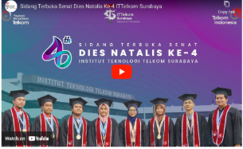

Dua Wisudawan Sistem Informasi Berhasil Meraih Predikat Cumlaude
Institut Teknologi Telkom Surabaya telah menggelar prosesi wisuda secara luring. Pada kegiatan tersebut, mahasiswa Sistem Informasi turut memperoleh prestasi akademik dan menjadi bagian dari kegiatan penting kampus.
Prestasi tersebut menjadi bukti semangat mahasiswa dalam menyelesaikan pendidikan. Kegiatan akademik dan informasi terbaru Program Studi Sistem Informasi dapat diikuti melalui blog ini.

Berbagai informasi mengenai kegiatan mahasiswa, akademik, dan perkembangan Program Studi Sistem Informasi dapat ditemukan melalui halaman blog ini.